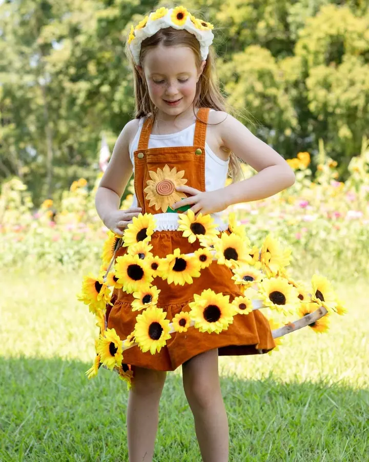
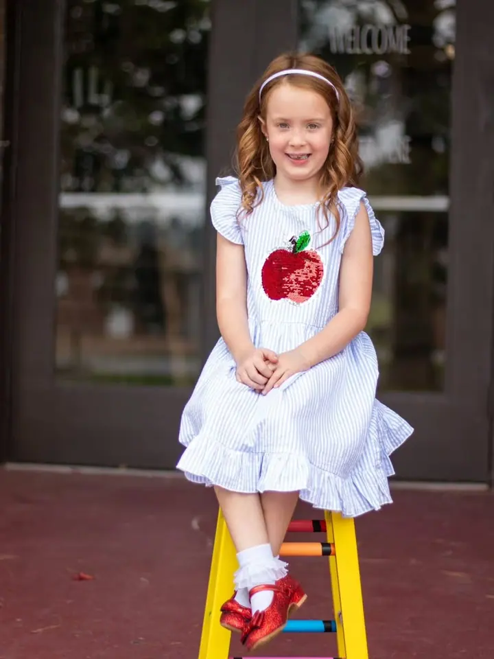
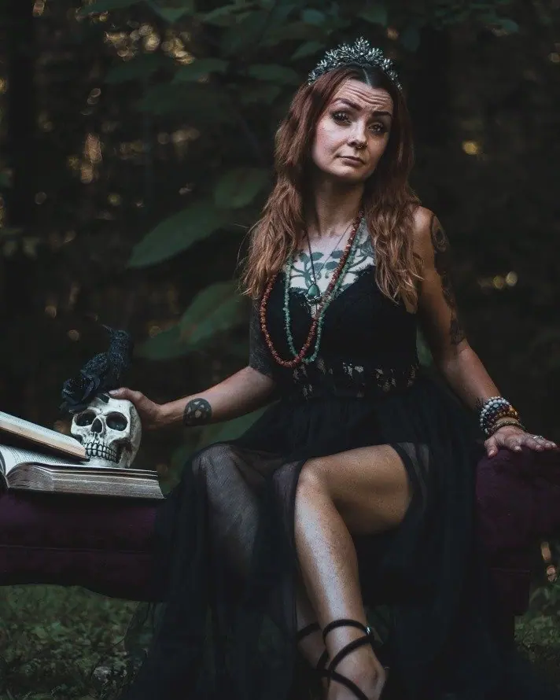
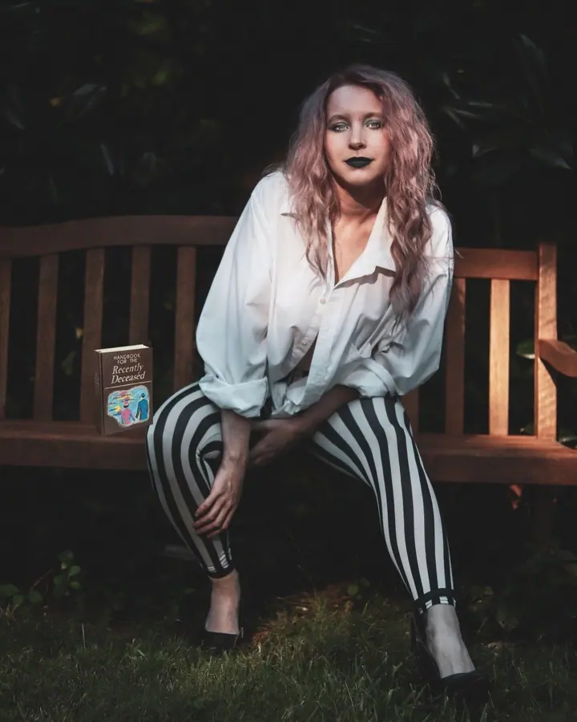
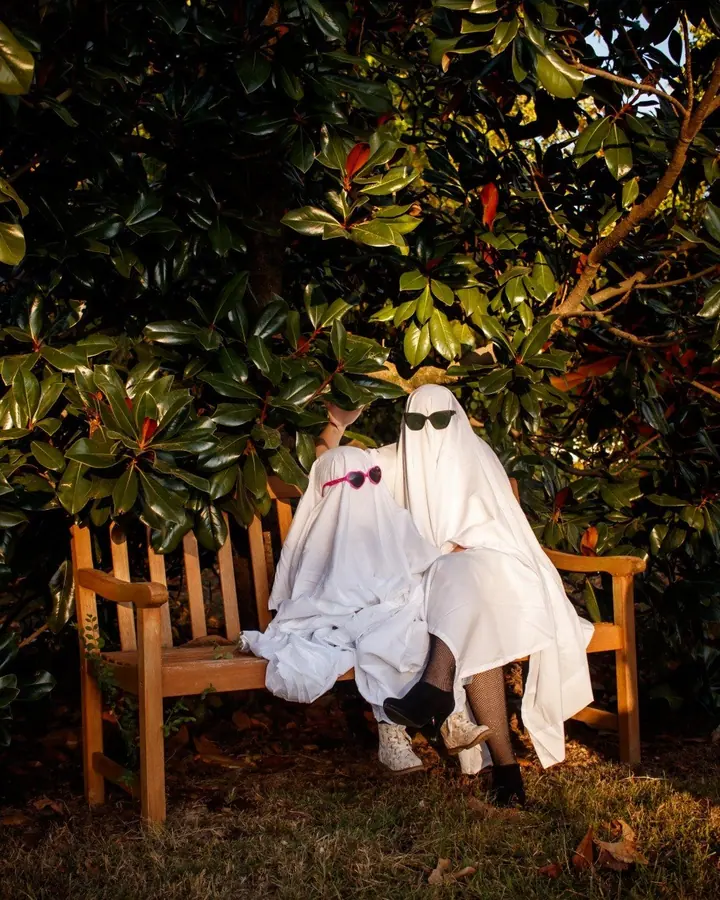
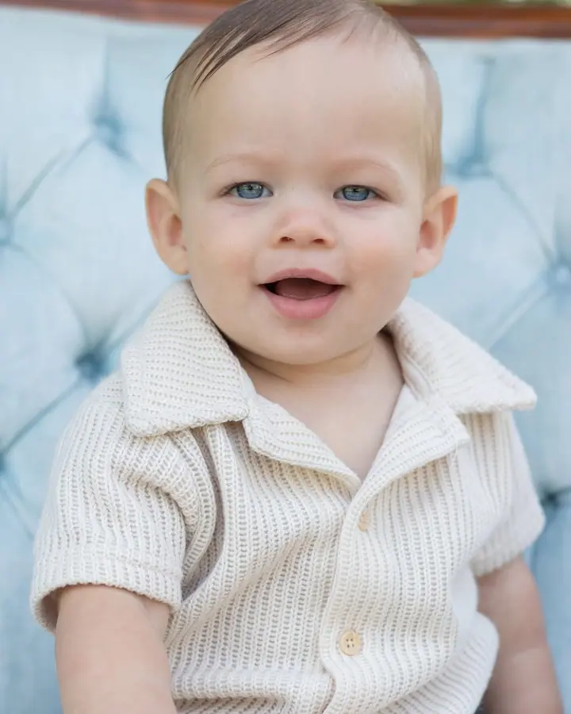
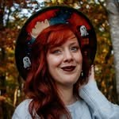

01 / 04
Miminka a děti
Focení novorozenců, mléčná koupel, smash cake k prvním narozeninám i dětské portréty. Vybíráte ze tří balíčků podle toho, kolik času chcete mít.
Zeptat se na termín→





Dětské a rodinné fotky s kouskem fantazie
Zeptat se na termín →(01) Ahoj
Jmenuji se The Raven Photography a fotím děti , rodiny a portréty s příběhem v ateliéru i venku v okolí Ethridge v Tennessee. Ráda připravím kostým, rekvizity nebo celé strašidelné focení , aby fotky vypadaly přesně jako vy.
615příspěvků s fotkami a příběhy
(02) Co fotím
01 / 04
Focení novorozenců, mléčná koupel, smash cake k prvním narozeninám i dětské portréty. Vybíráte ze tří balíčků podle toho, kolik času chcete mít.
Zeptat se na termín→02 / 04
Portréty s příběhem, kostýmem a rekvizitami, od podzimních strašidelných focení po fotky k maturitě. Hledám, co odpovídá vaší osobnosti a stylu.
Zeptat se na termín→03 / 04
Rodinné portréty venku nebo v ateliéru, v klidu a s legrací. Fotky, ke kterým se budete rádi vracet.
Zeptat se na termín→Dále nabízím
Fotím i svatby a větší události. Všechno, co se ten den stane, převedu do ucelené obrazové vzpomínky.
↗(04) Postup
Od první zprávy po hotovou galerii.
Krok 1 z 4
Napíšete mi a domluvíme termín a typ focení. Rezervaci potvrdíte zálohou 20 % z ceny balíčku.
Krok 2 z 4
Vyberete si délku focení 30, 60 nebo 90 minut. Společně promyslíme téma, oblečení a rekvizity.
Krok 3 z 4
Během domluveného času fotím bez omezení počtu snímků. Necháme dětem prostor a užijeme si to.
Krok 4 z 4
Upravené fotky dostanete v online galerii, která je dostupná 30 dní, a k nim souhlas s tiskem.
Kostým, rekvizity a kousek fantazie
(05) Za objektivem
Chci, aby vaše vzpomínky vydržely celý život. Proto se na každém focení dívám na detaily a hledám obraz, který opravdu odpovídá vaší osobnosti a vašemu stylu.
Nejčastěji fotím miminka a děti, od novorozeneckých fotek přes mléčnou koupel a smash cake až po fotky k maturitě. Stejně ráda ale fotím rodinné portréty, tematická focení i svatby.
Rekvizity a kostýmy často chystám sama, třeba sukni ze slunečnic. Záleží mi na tom, aby pro vás focení bylo zábavné a bez stresu a abyste si z něj odnesli fotky, ke kterým se budete vracet.

The
The Raven Photography · Dětská, rodinná a portrétní fotografka
Classic na 30 minut stojí 100 $, Prime na 60 minut 150 $ a Inclusive na 90 minut 200 $. Ve všech balíčcích je neomezený počet fotek během focení.
Při rezervaci se platí nevratná záloha 20 %. Focení je možné s předstihem přesunout, nejvýš dvakrát.
Fotky vám pošlu do online galerie, která platí 30 dní. Spolu s nimi dostanete souhlas s tiskem, takže si je můžete vytisknout, kde chcete.
Od úterý do pátku od 9 do 19 hodin, o víkendu od 10 do 19 hodin. V pondělí je zavřeno.
(07) Kontakt
Napište pár vět o tom, co si představujete, a termín, který se vám hodí.
theravenphoto@gmail.com